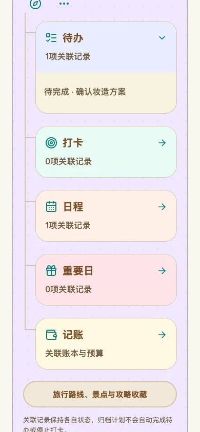
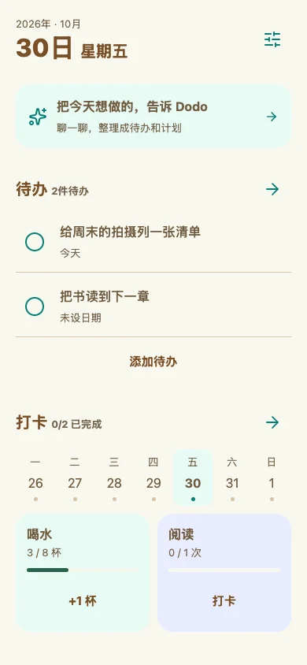
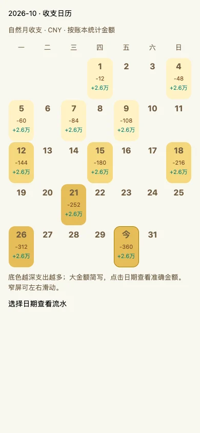
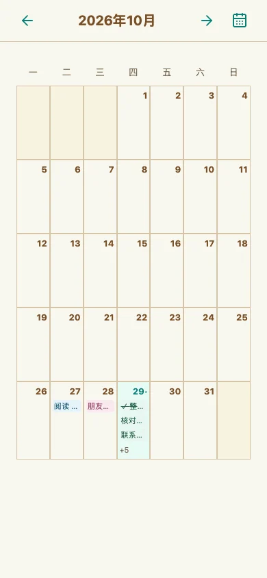

计划与待办
把“想做”，拆成小事
列好准备清单，关联日程、打卡和账本。
打开计划，一起看看已经走到哪里。

给生活，留一点从容
想做的事、约好的时间、花过的钱，
还有一点点积累的进展。
交给 Dodo，放在一起好好记录。
本地优先，无需注册账号。iOS 暂未开放下载。

一个人的日常，
也值得认真安排。
从准备一次旅行，到完成一次 COS 企划。
不用在零散的记录里，来回寻找进展。
列好准备清单，关联日程、打卡和账本。
打开计划，一起看看已经走到哪里。

日常收支，或是一次旅行的花费。
用账本和分类，把生活的开销理清楚。

安排约定，记录习惯。
在日历里看安排，在打卡里留下进展。

界面为真实组件的浏览器预览，使用示例数据；实际安装版可能有所不同。
Dodo 助手可以帮你把想法整理成计划、待办和记录。
连接你自己的 AI 服务后使用；不用 AI，也能独立使用各个记录功能。
关于安装、数据和现在的 Dodo。
日常记录保存在当前设备本地，无需注册账号。目前没有自动同步与备份，卸载应用或清除应用数据会丢失本地记录，请留意保管。
下载 APK 后，在系统提示时允许当前浏览器安装应用，再按提示安装。已安装的用户请直接覆盖更新，保留原应用，不要先卸载。也可以在 App 设置的“版本更新”中检查更新。
若下载无法打开，可前往 GitHub 发布页，在 Assets 中选择 dodo.apk。下载速度取决于当前网络。
目前公开提供 Android 体验版，尚未开放 iOS 下载。后续有可用的 iOS 安装渠道时，会在这里更新入口。
AI 是可选功能，需要自行配置兼容服务、模型和 API Key。使用时，当前消息与本主题相关上下文会发送给你选择的服务，可能产生该服务的费用。普通记录功能不需要 API Key。
Dodo 仍在开发与个人测试阶段，目前的 Android 包使用测试签名，原生设备验收尚未完成。待办、计划、日程、记账与打卡已可体验；日记与备忘仍为预览，同步与备份尚未实现。
不必一下安排好所有事。
先记下来，再慢慢向前。